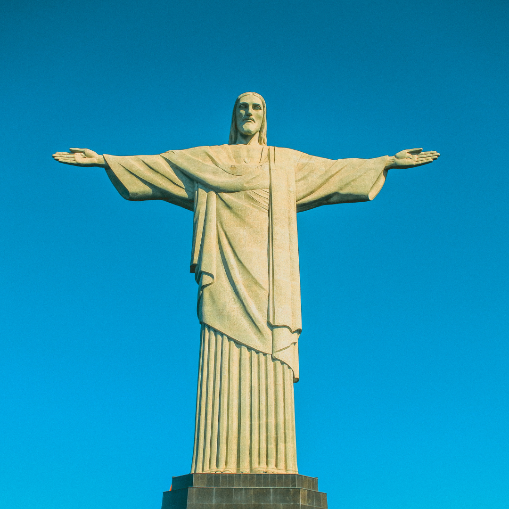

Cristo Redentor

Rio de Janeiro, RJ • Brasil
★★★★★
Sobre o destino
📍 Estrada Redentor- Alto da Boa Vista, Rio de Janeiro - RJ, 22241-330, Brasil.
O Cristo Redentor, localizado no Morro do Corcovado, no Rio de Janeiro, é um dos maiores ícones do Brasil. Inaugurado em 12 de outubro de 1931, o monumento tem 30 metros de altura, com os braços alcançando 28 metros de largura. Feito de concreto armado e revestido com pedras de sabão, a estátua simboliza fé, acolhimento e paz. Com uma vista deslumbrante da cidade, é um dos principais pontos turísticos do Brasil, atraindo milhões de visitantes todos os anos. Em 2007, o Cristo Redentor foi eleito uma das Novas Sete Maravilhas do Mundo, reconhecendo seu impacto cultural e religioso global.

Comentários (2.597 avaliações)
“A experiência no Cristo Redentor foi inesquecível! A vista panorâmica do Rio de Janeiro é deslumbrante,
e a grandiosidade da estátua torna o momento ainda mais especial. O acesso é bem organizado, e o ambiente transmite uma energia
única. Um passeio imperdível!”
“O Cristo Redentor impressiona com sua vista panorâmica incrível e simboliza paz e acolhimento no coração do Rio.”
Gostou? Deixe sua avaliação!